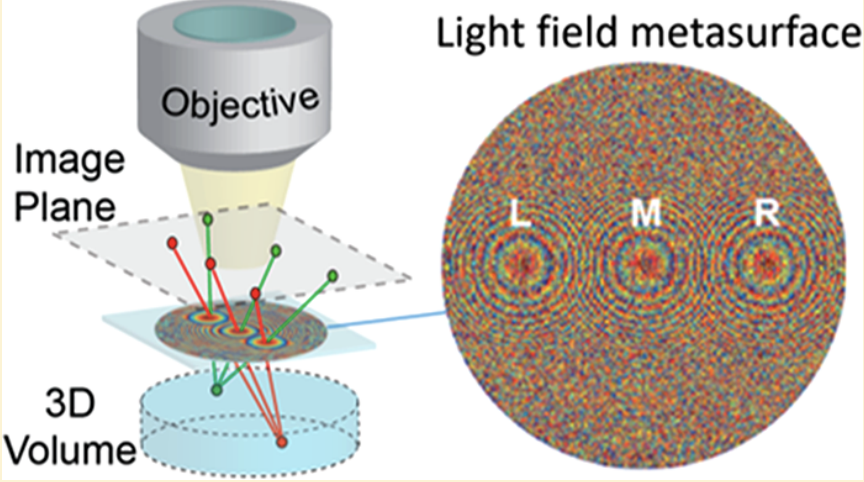
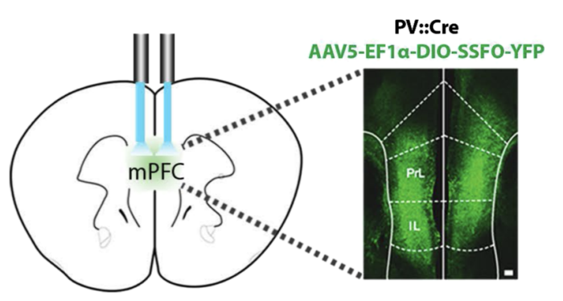

{kind=link}
Isaac V Kauvar
ikauvar@
I recently defended my PhD at Stanford University in Electrical Engineering, supported by a NSF Graduate Research Fellowship. I am fascinated by both light and the brain, and I leverage optics and imaging to understand mechanisms of neural information processing and cognitive control.
As a member of the Deisseroth and Wetzstein labs, I am broadly interested in designing and using new tools to understand the links between animal behavior and the structural and functional connectivity of neural circuits.
I like to draw; I design clothing apparel you can
buy here!
I am a photographer; check out some of my work
here.
I also enjoy cinematography, some of which can be seen here.

|
Cortical observation by
synchronous multifocal optical sampling reveals widespread
population encoding of actions. Kauvar I*, Machado T*, Yuen E, Kochalka J, Choi M, Allen WE, Wetzstein G, Deisseroth K. * = equal contribution Neuron (2020). [site (build your own COSMOS system!)][PDF][supplement][link][press] |
|  |
A light-field metasurface for high-resolution single-particle
tracking. Holsteen A*, Lin D*, Kauvar I, Wetzstein G, Brongersma M. * = equal contribution Nano Letters (2019). [PDF][link] |

|
Ancestral circuits for the coordinated modulation
of brain state. Lovett-Barron M, Andalman AS, Allen WE, Vesuna S, Kauvar I, Burns VM, Deisseroth K. Cell (2017). [PDF] |
|  |
Modulation of prefrontal cortex excitation/inhibition balance
rescues social behavior in CNTNAP2-deficient mice. Selimbeyoglu A, Kim CK, Inoue M, Lee SY, Hong ASO, Kauvar I, Ramakrishnan C, Fenno LE, Davidson TJ, Wright M, Deisseroth K. Science Trans. Med. (2017). [PDF] |
Ancestral circuits for the coordinated modulation
of brain state.  Global representations of goal-directed behavior in distinct
cell types of mouse neocortex.
Global representations of goal-directed behavior in distinct
cell types of mouse neocortex.  SPED Light Sheet
Microscopy: Fast Mapping of Biological System Structure and Function.
SPED Light Sheet
Microscopy: Fast Mapping of Biological System Structure and Function.  Natural Neural Projection Dynamics Underlying
Social Behavior.
Natural Neural Projection Dynamics Underlying
Social Behavior.  The
Role of Electron Affinity in Determining Whether Fullerenes Catalyze or
Inhibit Photooxidation of Polymers for Solar Cells.
The
Role of Electron Affinity in Determining Whether Fullerenes Catalyze or
Inhibit Photooxidation of Polymers for Solar Cells.  Unconventional
Face-On Texture and Exceptional In-Plane Order of a High Mobility n-Type
Polymer.
Unconventional
Face-On Texture and Exceptional In-Plane Order of a High Mobility n-Type
Polymer. In 2019 I worked on an ambitious 'moonshot' using machine learning (mostly Graph Neural Networks) as an AI@X resident (i.e. intern...) at X, Google's secretive R&D lab.
In 2014 I worked as a computational imaging engineer at Light.
I spent the summer of 2013 traveling along the northern Mediterranean, shooting rolls and rolls of black and white film. These photographs led to a solo exhibition in the Stanford SubGallery (many of which can be viewed here).
In 2012-2013 I completed a M.Sc. in Electrical Engineering at Stanford University on an IEEE Charles Legeyt Fortescue Scholarship. I studied primarily machine learning, image processing, and photography.
During the summer of 2012, I worked at Apple as part of the Panel Process and Optics team where I leveraged my background in optical physics to improve the liquid crystal display stack, resulting in this patent.
Before I happened upon imaging, photography, and neuroscience, I was most passionate about renewable (in particular, solar) energy conversion. As an undergraduate at Stanford University, majoring in Engineering Physics, I worked with Alberto Salleo and at the National Renewable Energy Laboratory, yielding two publications in the realm of improved organic semiconductors and lifetime stability of organic photovoltaics.
Ferrofluid music visualizer
An iPod controlled sound system with a dynamic equalizer and a ferrofluid wave chamber controlled by electromagnets synced to the music. (The linked video shows the not-quite-finished product).